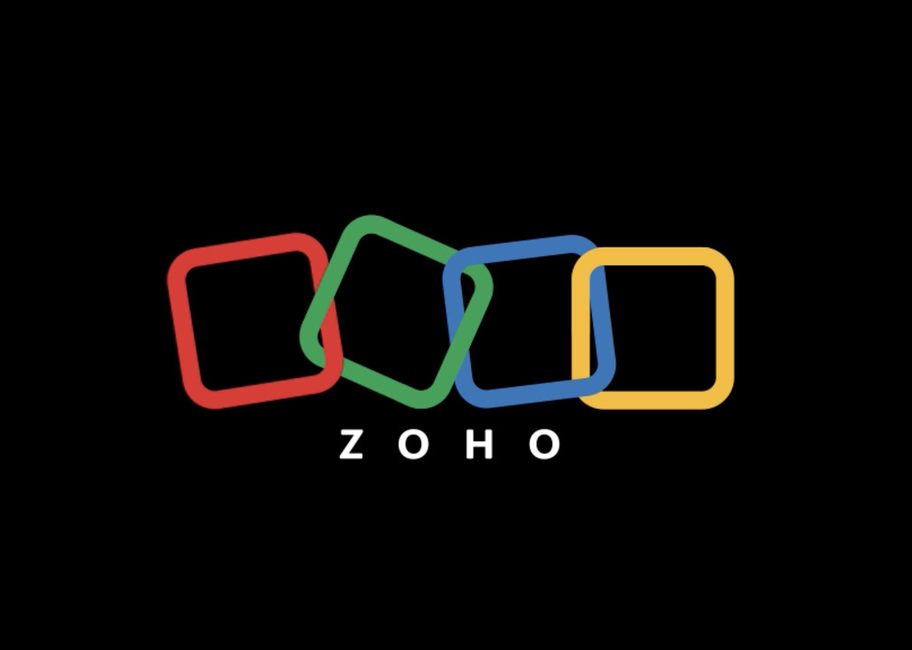
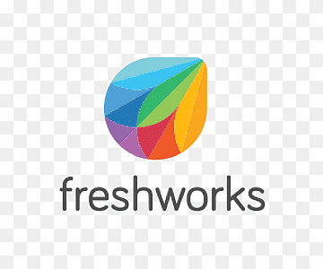
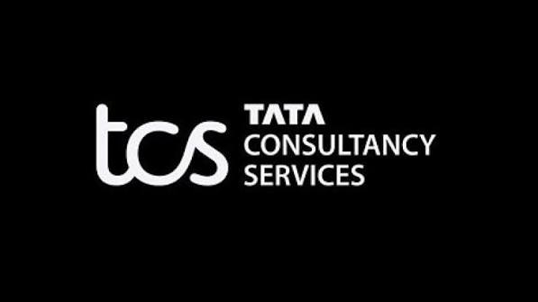

Chennai IT Companies
Chennai is one of India's leading IT hubs with many software companies.

Zoho
Chennai is one of India's leading IT hubs with many software companies.

Zoho Corporation is an Indian multinational technology company. It develops cloud-based software for businesses such as CRM, accounting, email, HR management, and office applications. Zoho provides more than 50 business applications and serves millions of customers worldwide.
1996
More than 30 years in the software industry.
Estancia IT Park, Chennai, Tamil Nadu, India.

Freshworks is a leading software company founded in 2010 by Girish Mathrubootham and Shan Krishnasamy. The company develops cloud-based software solutions for customer support, sales, marketing, and IT service management. Freshworks helps businesses improve customer communication and employee productivity through simple and powerful software products. The company provides solutions used by thousands of organizations across the world. Freshworks has its major development center in Chennai and continues to create innovative technology solutions for global customers.
2010
More than 15 years in the software industry.
Chennai, Tamil Nadu, India.

Tata Consultancy Services (TCS) is one of the largest IT service and consulting companies in the world. It was founded in 1968 and is a part of the Tata Group. TCS provides software development, cloud computing, cybersecurity, artificial intelligence, and digital transformation services to businesses worldwide. The company works with clients from different industries including banking, healthcare, education, retail, and manufacturing. TCS has offices across many countries and its Chennai center plays an important role in delivering advanced technology solutions to global customers.
1968
More than 55 years in the IT industry.
Chennai, Tamil Nadu, India.

Infosys is a global leader in next-generation digital services and consulting. It was founded in 1981 by Narayana Murthy and his team. The company provides information technology services such as software development, cloud computing, artificial intelligence, cybersecurity, data analytics, and business consulting. Infosys helps organizations around the world improve their business operations through digital transformation and modern technologies. The company serves clients in many industries including finance, healthcare, retail, and manufacturing. Infosys has offices in several countries and continues to focus on innovation, technology research, and employee development.
1981
More than 40 years in the IT industry.
Chennai, Tamil Nadu, India.